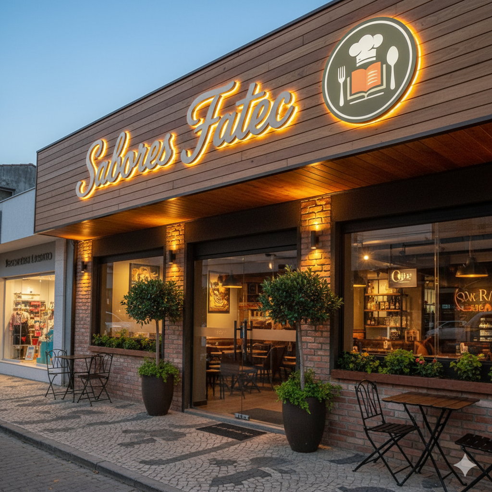
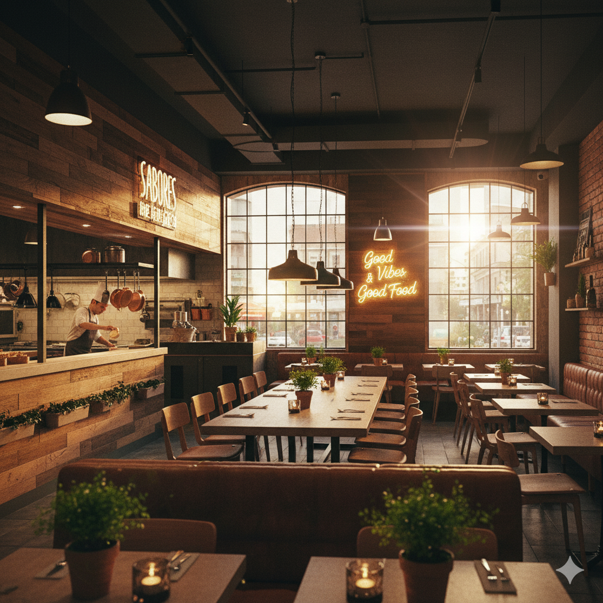

Sabores Fatec
Bem-vindo ao Sabores Fatec! Somos o destino perfeito para a sua família, um restaurante completo que celebra os bons momentos da vida. Nosso cardápio foi cuidadosamente elaborado para agradar a todos os paladares, oferecendo uma experiência gastronômica completa!
Venha nos visitar na Rua das Palmeiras, 123 - Bairro Gastronômico, Salto/SP. Para reservas ou mais informações, entre em contato pelo telefone (15) 3211-5678 ou pelo email contato@saboresfatec.com.br. Nosso horário de funcionamento é de Terça a Domingo, das 11h30 às 23h00.


Cardápio:
Carregando cardápio...